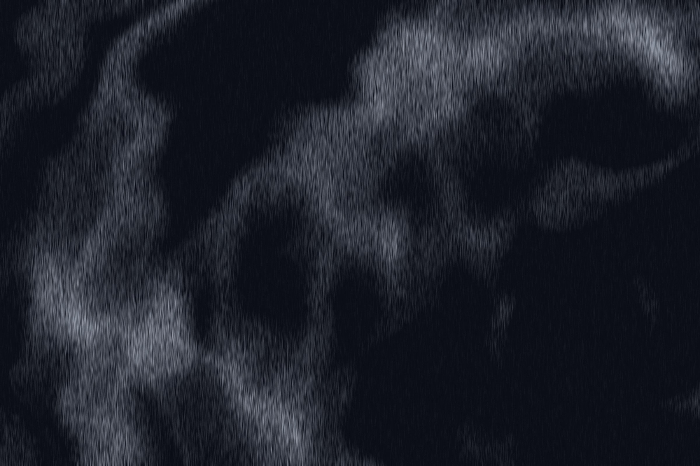
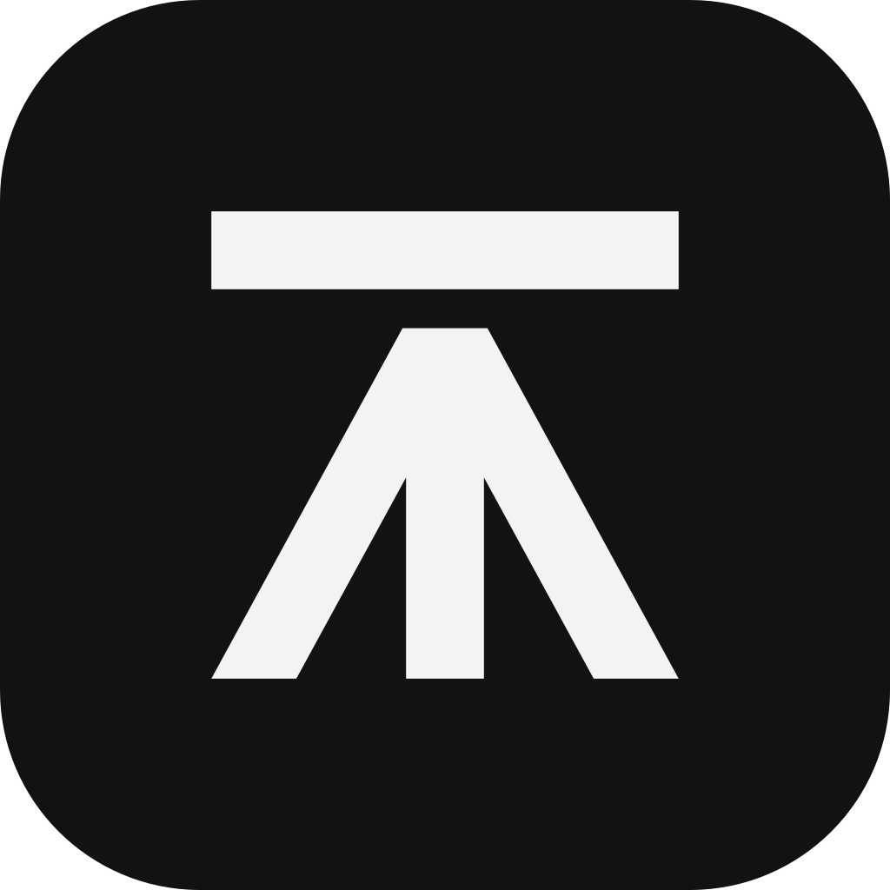
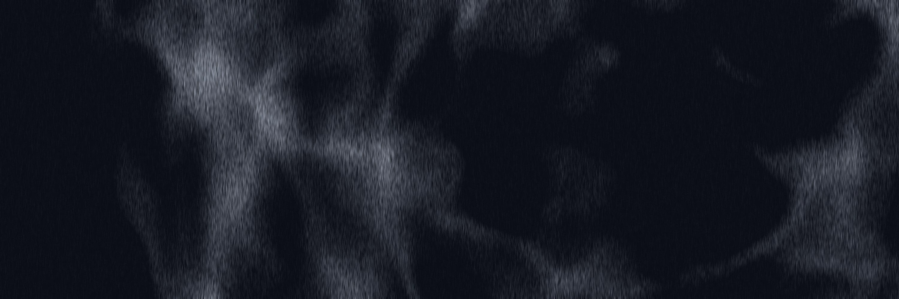
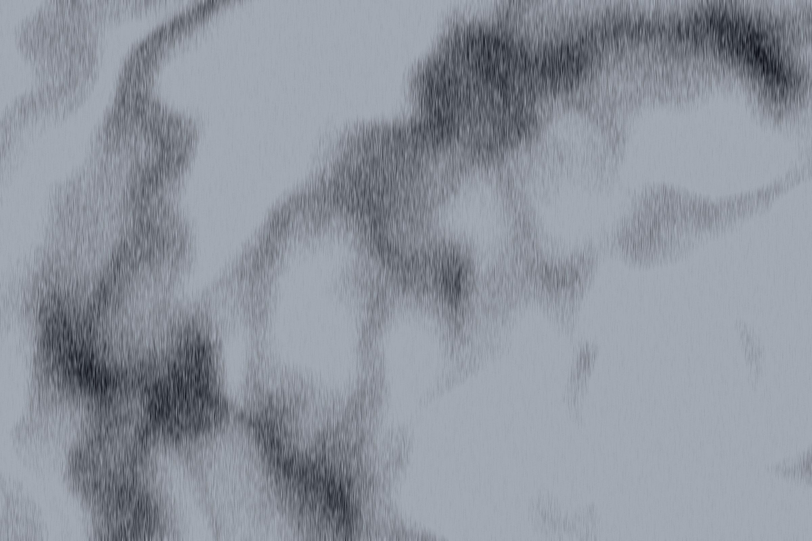

Nothing invented. Everything measured.
The brand standard for SpaceBench, a benchmark family that tests language models on closed-loop control of spacecraft in simulators.
The ground is the plume field: where the thrusters' exhaust pointed during the seed 1 gate run. A picture of that run, not a measurement.
| Document | SB-BS |
|---|---|
| Revision | B · 2026-11-18 |
| Applies to | Dock, Landing |
| Grounds | Film, Ink |
Six rules
The references behind this identity borrow the look of engineering documents. SpaceBench has the real quantities, so the identity uses them instead of imitating them.
Derived, not decorated.
Every graphic is drawn from a simulator quantity or from the simulation core's own tables: a limit, a range, a hash, a thruster. If a shape has no source, remove it.
Empty until flown.
No model has flown and no docking flight exists. The kit ships no sample data. A piece that will carry results is drawn empty and says so.
One accent, one meaning.
The parent brand is black and white. Each simulation owns one colour. It appears as ink on film, as light on ink, or as one full field, and never beside another accent.
Film and ink are equals.
Documents, tables and drawings live on drafting film. Flight and replays live on near-black. Every asset ships for both grounds.
A unit on every number.
0.10 m, 4.0 deg, k of 30 seeds. A number without a unit, a sample size or a source does not go on the page.
Status is a shape, never a hue.
Pass is a solid dot. Fail is a ring. The page must still read on a black-and-white printer and for colour-blind readers.
Logo
A surveyor's bench mark is a level line with a broad arrow under it: a fixed height that every later measurement is taken from. Ours is one disc with the line and the arrow cut out of it. Nothing is drawn on top, so it holds as one shape at any size.
The line and the arrow are holes. Whatever lies behind the mark shows through them, so the mark is never given a white backing of its own.
A square plate over the plume field, with the mark as a window onto the other ground. Platforms crop it to a circle, and the plate's corners stay inside.
Orientation system
The mark turns to each simulation's approach axisSpaceBench. The arrow rises to the line. Black and white only.
Ion violet. The capsule closes sideways on the port plane.
Burn orange. The booster descends to the pad.
The next simulation takes the free axis and one colour from the reserve list.
Wordmark and lockups
Second tone names the thing: gray for Bench, accent for a simulationGeist 800 with one vertical cut where each bowl meets its stem, the same move as the cuts in the disc. A round with no stem, the o of Dock, is cut on its centre line. The cuts are for display sizes. Under 48 px they close up, so use the plain lockup. The same letters are a font, SB Display: see Typography.
Geist 700, no cuts, with the mark at cap height. Tracking −0.04 em.
Size and icons
At 16 px the three cuts close and the mark reads as a disc with a slot. That is the floor. The canvas already holds the clear space, so never crop it.

Flat fields. A full accent field is allowed here and on one-colour posters. No texture at icon size.
Misuse
Six ways to break itColour
A cool-neutral ladder from white to void carries the whole brand: the grey of drafting film, not of paper. Colour enters only with a simulation, one accent each, never mixed with another accent on the same page.
Accent registry
One per simulationAs ink it stays under a tenth of the page: if two things are accented, neither is. Burn orange is too light for text on film, so text uses accent-text, a darker step picked per ground.
Listed so a later simulation picks a hue that stays apart from violet and orange. One functional colour exists outside the brand: alert, used only in the flight view for a keep-out or collision violation.
Roles
Use roles in code, never raw stepsText needs 4.5. Display type and graphics need 3.0. The third tone is for display sizes only.
Typography
Four voices. Geist speaks, Geist Mono labels, SB Matrix reads out one number at display size, and a plotter alphabet adds the rare hand note. SB Display is Geist with the wordmark's cuts. No serif.
Headlines at 700, tracking −0.03 to −0.055 em. Body at 400. SIL OFL 1.1.
Capitals, 0.07 em tracking. Labels, identifiers, every figure under 72 px, and code. Never sentences.
Our own face. One number per sheet, at 72 px and up. Smaller, the dots clot, so the figure goes to Geist Mono.
Single-stroke letters, drawn as a pen plotter draws them. One or two notes on a sheet, lower case, never a heading. Free for any use; its acknowledgement ships in fonts/.
SB Display
The wordmark's lettering as a font · fonts/SBDisplay.ttfBDOPQR
0689
Not a fifth voice. It is Geist at 800 with the wordmark's cuts and the mark built in. A cut goes where a bowl leaves its stem. A round with no stem is cut on its centre line. Letters with no closed bowl (S, c, e, n, h, k) are never cut.
Type SpaceBench, SpaceBench Dock or SpaceBench Landing in it and the outline is the display wordmark's. The build compares the two and fails if they differ by a font unit.
That is a 48 px cap height. The wordmark's −0.04 em is built into the letters, so add none. One line on an identity piece. Never body text, never data.
:sb: :dock: :landing: where ligatures are on, or U+E000, U+E001, U+E002. A space after it leaves the lockup's gap.
X sets every post in its own typeface. tools/post-image.html sets a typed line in SB Display and saves it as an image to attach.
Scale
Token · size / leading / tracking · weightSetting rules
Statement in ink, qualifier in the third tone. Display sizes only, flat grounds only.
The last phrase may take the accent when it is the one thing to find.
Gray lead, ink continuation, in one line.
Labels and captions are 11 px mono capitals at the smallest. If it does not fit at 11, it does not go on the page.
A block cursor opens a section. A pill is a filter or a state. The dashed stamp says what a piece is not yet.
A space between number and unit. "deg" in tables and on drawings. Counts read "k of n". Times read T+mm:ss.
Voice
A flight controller, not a marketer. Short declarative sentences. Say what was measured, how many times, and against what limit. Then stop.
| Write | Not | Why |
|---|---|---|
| k of 30 seeds docked, with the rate and its 95% interval. | Crushes six-axis docking. | A rate without its sample and interval is not a result. |
| Closing speed at contact, against the 0.05 to 0.10 m/s limit. | A perfect docking. | Name the quantity and the limit it was judged against. |
| A Dragon-class vehicle built from public parameters. | An exact Crew Dragon simulation. | "Exact" is reserved for the day real vehicle data arrives. |
| The pass rule is the docking standard's reference contact conditions. | Dragon's flight limits. | They are IDSS Rev F design conditions, not verified flight limits. |
| A benchmark for six-axis spacecraft piloting by language models. | The first LLM docking benchmark. | Earlier work exists. We cite it. |
| Cost per episode, per model. | Cheapest provider. | The leaderboard does not rank providers by price. |
| Nobody flew this. A scripted run for the determinism gate. | A sample flight. | The only run that exists is the gate run. Call it what it is. |
Words and formats
These are the nouns of the action model and the scenario. Use them the same way every time.
If the sentence still works after the word is deleted, delete it.
| Drawing | SB-D-010 |
|---|---|
| Tier | T1 … T6 |
| Elapsed | T+mm:ss |
| Date | 2026-11-18 |
| State hash | afbdc94cf80ce4e1 |
A hash is always shown whole, in lower case, with the seed and the tick it belongs to. This one is seed 1 after 200,000 ticks.
Drawing rules
Sheets are drawn the way a drawing office draws them. Three line weights, flat grounds, and nothing drawn ever touches type. The last rule is checked by a program on every export.
The cut line is the thing itself. The chain line is an axis or a centre. The thin line is a dimension, a leader or a grid. There is no fourth weight.
| Edge | No text outside the artboard or within 10 px of its edge. |
|---|---|
| Overlap | No two pieces of text overlap. |
| Cross | The page is rendered again with its text hidden. Behind every piece of text the ground must be one flat colour. |
| Small | No text under 11 px. |
An export that fails is not shipped. On identity pieces the cross check is off, because their ground is the plume field.
No shadow, bevel, glow, gradient or paper grain. Depth comes from the two grounds and from line weight. The one texture in the kit is the plume field, and it is made from simulator data.
Every sheet ends in one. Drawing number, title, scale, source, status and date. The source cell names the file or the standard the drawing was made from.
One or two on a sheet. A plotter note says what a figure cannot: "no flights drawn. none flown yet." It never repeats a label and never points with an arrow that crosses type.
Texture
One texture, made in code. The plume field is a map of where the thrusters' exhaust pointed during the only run that exists, the seed 1 gate run. It is a picture of that run, not a measurement.


The spread of each firing, the blur, the drift and the fibre grain are picture choices, listed in textures/textures.json. There is no physical plume model behind them.
Identity pieces only: the cover, the profile picture, the banner and the share card. It is the ground, and the plate or the type sits on it.
Behind data. Drawing sheets, tables, the leaderboard, tier posters and the interface stay on flat film or flat ink. Never tinted, never stretched, never used at icon size.
Graphic devices
Nine drawings from js/sb-graphics.js. Each one is drawn from the scenario's constants or the simulation core's own table. Devices that show a flight are drawn empty until one exists.
Arcs start at the hold points and the 200 m keep-out sphere, on a log range scale, and land on the port.
Seven spokes, one per contact limit, each scaled so its limit lies on the circle. The shaded sector is the closing-speed floor. A flight is a seven-cornered outline; inside the circle it docked.
One leaderboard row is 180 flights. Solid dot: docked. Ring with an arc: failed after reaching a hold. Cross: collision. Every ring here is open because nothing has flown.
A log ruler. Holds are the long ticks. Use it as a progress bar, a slider and a stepper.
Sixteen thrusters in four pods, from the core's own table. It is a placeholder, not Dragon's layout. Say so wherever it is shown.
The interface along the approach axis. For the capture and latching stage that follows first contact.
Target on the solid ellipse, chaser on the dotted one. Reserved for content about orbital dynamics.
The accent band is the tolerance, here 4.0 deg either way. The pointer appears when there is a measured value.
About 34 mm along the line of sight and 6 mm sideways, drawn as an ellipse in that ratio. A simulation-study figure; tier parameters are provisional.
Pictograms
Drawn on a 24 unit grid with a 1.5 unit stroke and round caps. Six of them are the six axes, because the benchmark is about how those axes interact.
Tiers
Six dots, n lit. Tier is never a colourStatus
Shape carries the stateComponents
Plain HTML and CSS in css/brand.css, driven by the tokens. They follow the Ground and Simulation switches in the side rail. Flat: no shadow anywhere.
One accent button per view. The command button, square with corner ticks, is for actions that reach the simulator.
Tracks are tabs because they are never pooled. Six dots page through the six tiers.
Offsets, attitude errors and rates, the same instruments a human sees, each with its limit. A value outside its limit gets an accent edge, not a red fill.
Reference contact conditions, IDSS IDD Rev. F, table 3.3.1.1-2. Design conditions adopted as the pass rule, not verified flight limits.
The tag that travels with a replay or a shared image. Accent block with the mark, then the facts. This one names the gate run, the only run there is.
A hairline with four registration dots. Use it around figures in documents, one frame per page.
Layout
Sheets, not pages. Each sheet has a header row, one statement, one figure and a title block. Twelve columns, hairlines, and generous empty film.
Data display
The leaderboard is the product, so it gets the strictest rules. Nothing has flown, so the board below is empty. It shows the rows a board will hold at launch and no numbers.
Sort by success rate. Each reasoning level is its own row. The row under discussion takes the soft accent; nothing else on the table is coloured.
A rate always shows its interval. The bar is the rate, the whisker with two ring terminals is the 95% Wilson interval for k of n seeds.
Never pool tracks or boards. Telemetry, vision and autopilot are separate tables. Live human flights and matched human flights are separate boards, and only the matched board sits next to models. Cost is per episode, never a provider ranking.
Motion
Things move the way the vehicle does: a short impulse, then a coast. No bounce, no spring, no overshoot. An overshoot at a docking port is a failure.
State changes, toggles, readout updates. Values step, they do not tween.
Panels, menus and cards entering or leaving.
Camera moves, page transitions, replay scrubbing. Fast start, long settle.
With reduced motion requested, everything becomes a pulse.
Sheets
Six drawings in templates/, exported at twice their size. Every figure on them is real: read from the docking standard, from the core's tables, or from runs of the core made by the generators in build/gen/.
Applications
Identity pieces on the plume field, and flat pieces that carry facts. Each is an HTML file in templates/ that reads the tokens, so a change to the standard reaches all of them on the next build.
Files
Everything is generated by the scripts in build/. Change a number there, run the build, and the logos, tokens, fonts, texture and exports follow. README.md gives the order.
Set data-theme to light or dark and data-sim to parent, dock or landing on any element. Everything inside follows. One level of nesting is supported: a dark panel in a light page, or the reverse.